항공무선통신사 (2013-03-17 기출문제)
1과목: 전파법규
1. 다음 중 무선국 개설허가의 유효기간으로 잘못된 것은?
- 실험국 : 1년
- 항공국 : 3년
- 우주국 : 5년
- 항공법에 의해 항공기에 의무적으로 개설하는 무선국 : 무기한
(정답률: 84%)

2. 전자파가 인체에 미치는 영향을 고려하여 무선설비 등에서 발생하는 전자파에 대한 기준을 정하여 고시하는 사항과 관계없는 것은?
- 전자파 인체보호기준
- 전자파 강도 측정기준
- 전자파 흡수율 측정기준
- 전자파 인체내성 측정기준
(정답률: 87%)
3. 특정한 주파수의 용도를 정하는 것을 무엇이라 하는가?
- 주파수 할당
- 주파수 분배
- 주파수 지정
- 주파수 배치
(정답률: 53%)
4. 다음 중 항공이동업무에 있어서 통신의 우선순위가 옳게 나열된 것은?
- 조난통신 - 기상통보에 관한 통신 - 무선방향탐지에 관한 통신
- 조난통신 - 긴급통신 - 무선방향탐지에 관한 통신
- 조난통신 - 기상통보에 관한 통신 - 항공기 안전운항에 관한 통신
- 조난통신 - 항공기 안전운항에 관한 통신 - 긴급통신
(정답률: 87%)
5. 국제항공조정무선통신망에 속하는 항공고정국에서 행하는 호출 순서를 바르게 나타낸 것은?
- 자국의 호출부호 - "DE" - 상대국의 호출부호 – 청수주파수를 표시하는 약어
- 자국의 호출부호 - 상대국의 호출부호 - "DE" - 청수주파수를 표시하는 약어
- 상대국의 호출부호 - "DE" - 자국의 호출부호 – 우선순위를 표시하는 약어
- 상대국의 호출부호 - 자국의 호출부호 - "DE" - 우선순위를 표시하는 약어
(정답률: 78%)
6. 다음 중 항공기국의 통신연락 방법으로 옳지 않은 것은?
- 책임항공국과 그 담당구역은 “항공법”규정에 따른다.
- 항공기국은 원칙적으로 책임항공국과 연락을 취하여야 한다.
- 부득이한 사정이 있을 때에는 다른 항공기국을 경유할 수 있다.
- 항공기국 상호간의 통신은 호출한 항공기국이 그 통신을 지도한다.
(정답률: 72%)
7. 의무항공기국의 A3E전파 118[MHz]부터 136.975[MHz]까지 주파수대의 전파를 사용하는 송신설비로서 비행고도에 따른 유효통달거리에 관한 기준으로 잘못된 것은?
- 비행고도 1,500미터 : 150킬로미터 이상
- 비행고도 3,000미터 : 210킬로미터 이상
- 비행고도 5,000미터 : 275킬로미터 이상
- 비행고도 7,000미터 : 290킬로미터 이상
(정답률: 73%)
8. 노탐(NOTAM)에 관한 통신은 긴급의 정도에 따라 어떤 통신 다음으로 그 순위를 적절하게 선택할 수 있는가?
- 조난통신
- 긴급통신
- 무선방향탐지에 관한 통신
- 항공기 안전운항에 관한 통신
(정답률: 49%)
9. 다음 중 양벌규정에 해당하지 않는 경우는?
- 허가를 받아야할 무선국을 허가 없이 개설한 경우
- 운용정지 명령을 받은 무선국을 운용한 경우
- 무선국에 대한 검사, 조사 또는 시험을 거부한 경우
- 조난이 없음에도 무선설비에 의하여 조난통신을 발하는 경우
(정답률: 78%)
10. 다음 중 항공국의 의무 청취주파수 (전파형식/주파수)로 옳은 것은?
- A3E/121.5[MHz]
- J3E/121.5[MHz]
- A3E/156.8[MHz]
- J3E/156.8[MHz]
(정답률: 77%)
11. 다음 중 ITU의 공용어가 아닌 것은?
- 중국어
- 프랑스어
- 일본어
- 영어
(정답률: 89%)
12. 해상이동업무의 무선국과 통신하기 위하여 항공기국이 156[MHz]와 174[MHz]사이의 주파수를 사용하는 경우, 송신기의 평균 송신전력은 몇 와트를 초과할 수 없는가?
- 50와트
- 30와트
- 10와트
- 5와트
(정답률: 67%)
13. 항공기에 개설하여 항공이동위성업무를 행하는 이동지구국은?
- 항공국
- 항공기국
- 항공지구국
- 항공기지구국
(정답률: 83%)
14. 항공무선통신사 자격증을 소지하고 제 3급아마추어무선기사(전신급) 자격검정에 응시하는 경우 면제받을 수 있는 과목이 아닌 것은?
- 전파법규
- 통신보안
- 무선통신술
- 무선설비취급방법
(정답률: 53%)
15. 다음 중 국제 전파규칙(RR)에서 규정하고 있지 않는 사항은?
- 업무와 무선국에 관한 규정사항
- 주파수할당에 관한 사항
- 공중선전력의 분배에 관한 사항
- 무선국으로부터의 혼신에 관한 사항
(정답률: 66%)
16. 무선설비기기에 대한 적합성평가의 기준적용에 대한 시험 및 확인 방법 등에 관한 세부사항은 누가 공고하는가?
- 우체국장
- 한국방송통신전파진흥원장
- 국립전파연구원장
- 중앙전파관리소장
(정답률: 47%)
17. 다음 중 외국정부 또는 그 대표자에게 무선국의 개설을 허용할 수 없는 무선국은?
- 실험국
- 의무선박국
- 의무항공기국
- 방송국
(정답률: 71%)
18. 다음 중 조난호출을 행한 항공기국이 호출에 이어서 지체 없이 행하여야 하는 조난통보 사항으로 적합하지 않은 것은?
- 조난항공기의 식별표지
- 책임항공국의 호출부호
- 조난항공기의 위치
- 조난의 종류, 상황과 필요로 하는 구조의 종류
(정답률: 74%)
19. 다음 중 방송통신위원회가 전파이용기술의 표준화를 추진하는 직접적인 목적으로 볼 수 없는 것은?
- 전파의 효율적인 이용 촉진
- 전파이용질서의 유지
- 전파감시업무의 효율적 수행
- 전파이용자 보호
(정답률: 75%)
20. 항공이동업무국의 운용시간에 관한 사항으로 틀린 것은?
- 항공국 및 항공지구국은 별도로 고시하지 않는 한 상시 운용하여야 한다.
- 의무항공기국의 운용의무시간은 그 항공기의 항행 중으로 한다.
- 의무항공기국은 운용의무시간 외에 무선국 검사에 필요한 경우 운용할 수 있다.
- 의무항공기국은 운용의무시간 외에 비행종료 후 타 항공기국에 연락을 위해 송신할 수 있다.
(정답률: 71%)
2과목: 기초전파공학
21. 다음 중 무선송신기의 구성과 관계가 없는 것은?
- 발진회로
- 증폭회로
- 변조회로
- AVC회로
(정답률: 67%)
22. 단파통신에 있어서 전리층의 반사를 이용하여 통신할 수 있는 가장 높은 주파수를 무엇이라 하는가?
- 임계주파수
- 반사주파수
- 최적주파수
- 최저주파수
(정답률: 59%)
23. 계기착륙장치(ILS)의 구성요소와 거리가 먼 것은?
- 로컬라이저
- 글라이드 패스
- 마아커 비콘
- 2차 레이더
(정답률: 70%)
24. 다음 중 전리층에서 일어나는 현상이 아닌 것은?
- 전파의 회절
- 전파의 산란
- 편파면의 회전
- 전파의 굴절
(정답률: 51%)
25. 운항 중인 항공기에 접근하는 항공기가 있을 경우 충돌방지시스템(TCAS)에서 접근하는 항공기의 충돌을 방지하기 위한 정보를 제공해주는 장비는?
- SELCAL
- Radar
- VOR/DME
- ATC Transponder
(정답률: 64%)
26. 수신기의 선택도를 높이는 방법으로 틀린 것은?
- 고주파 증폭회로를 부가한다.
- 동조회로의 Q를 크게 한다.
- 리미터 회로를 부가한다.
- 슈퍼헤테로다인 수신방식으로 한다.
(정답률: 54%)
27. TVOR(Terminal VOR)의 경우 일반적인 사용가능 고도와 통달거리(반경)는?
- 1,000~12,000피트, 15해리
- 1,000~12,000피트, 25해리
- 1,000~14,500피트, 40해리
- 1,000~18,000피트, 40해리
(정답률: 62%)
28. 다음 중 발진조건을 나타낸 것으로 옳은 것은? (단, A:증폭도, β: 궤환률)
- A = 1
- β = 1
- Aβ = 1
- Aβ ＜ 1
(정답률: 60%)
29. 다음 중 가장 이상적인 증폭기의 잡음지수 F는 얼마인가?
- F = 0
- F = 1
- F = 10
- F = 100
(정답률: 53%)
30. 전압 증폭도가 20[dB]인 증폭기를 2단으로 종속 연결하고, 회로 환경 등으로 인해 5[dB] 손실이 생겼다면 종합 증폭도는 몇 [dB]인가?
- 30[dB]
- 35[dB]
- 40[dB]
- 45[dB]
(정답률: 62%)
31. 콘덴서를 병렬 연결한 경우의 총 정전용량을 나타낸 올바른 식은?
- C = C1 + C2 + C3 + … + Cn
- C = C1 × C2 × C3 × … × Cn
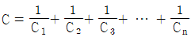
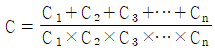
(정답률: 61%)
32. 단파대의 송신에서 지표파가 도달하지 않는 지점에서 공간파가 전리층에서 반사되어 되돌아오는 지점 사이의 전계강도가 “0”에 가까운 것을 무엇이라 하는가?
- 불감지대(Dead Zone)
- 페이딩(Fading)
- 라디오 덕트(Radio Duct)
- 케널리(Kenely)
(정답률: 57%)
33. 초고속 인터넷의 경제성을 확보하고 안정적 품질을 보장하며 시속 60[km/h] 이상으로 이동하면서 고속으로 인터넷 접속이 가능한 서비스는?
- WiBro
- DMB
- HSDPA
- Wi-Fi
(정답률: 60%)
34. 다음 중 수신기의 감도측정에 필요 없는 측정기는?
- 시그널 제네레이터
- VTVM(진공관전압계)
- 오실로스코프
- 와트메타
(정답률: 44%)
35. VOR원리에 의해 방위정보를 얻으면서 별도의 DME에 의해 거리를 얻는 항법장비는 무엇인가?
- TACAN
- ADF
- ILS
- VORTAC
(정답률: 52%)
36. 다음 중 레이더 주파수밴드별 사용주파수 및 용도를 잘못 연결한 것은?
- S Band : 2.7~3.5[GHz], 공항감시레이더, 수색레이더
- C Band : 5.25~5.925[GHz], 기상레이더, 수색레이더
- X Band : 8.5~10.550[GHz], 공항감시레이더, 선박레이더
- Ka Band : 13.4~17.7[GHz], 2차 레이더, 원거리기상레이더
(정답률: 69%)
37. 다음 중 직류 발전기에 대한 설명으로 틀린 것은?
- 전기자(Armature)의 권선은 적층 철심에 감겨있고 자기장 내에 놓여 있을 때 큰 전압을 얻을 수 있다.
- 전기자의 권선은 전기 철심의 많은 홈에 많은 코일이 들어있어 발전 전압의 크기가 변하고 불안정한 직류전압이 된다.
- 계자는 연철에 권선이 감겨있어 스스로 발생한 직류전압 또는 외부의 직류전원에서 전류가 들어와 전자석이 된다.
- 브러쉬는 카본이 사용되며 정류자와 접촉을 원활히 한다.
(정답률: 60%)
38. 다음 중 TACAN 오차를 방지하기 위한 방법이 아닌 것은?
- TACAN국 식별을 점검하고 Monitor한다.
- ADF, VOR, Radar 등 다른 항법장비를 함께 이용한다.
- 비행 전에 사용하게 될 지상국의 각종 정보를 미리 점검한다.
- TACAN국을 수시로 바꾼다.
(정답률: 65%)
39. 전리층반사나 지표파를 이용하지 않고 주로 직접파를 이용하는 주파수대는?
- 중파
- 중단파
- 단파
- 초단파
(정답률: 59%)
40. 측정기가 갖추어야 할 일반적인 조건이 아닌 것은?
- 측정오차가 적을 것
- 측정값의 확도가 높을 것
- 안정도가 좋을 것
- 동작전원은 교류전원일 것
(정답률: 61%)
3과목: 통신보안
41. 무선 통신망의 통신보안대책으로 가장 적합한 것은?
- 무선통신망은 자격취득자만 사용하도록 한다.
- 비밀내용은 반드시 보안자재의 사용을 생활화하여야 한다.
- 통신보안은 제도상 교육기관의 교육만으로 성취될 수 있다.
- 국가의 기밀은 무선통신망을 이용해야 한다.
(정답률: 63%)
42. 다음 중 통신보안이 필요한 요인으로 가장 적절한 것은?
- 통신장비가 디지털화 되고 있으므로
- 대부분의 통신이 평문으로 소통되므로
- 무선통신 이용증가로 풍부한 정보의 원천이 되므로
- 수신 장치의 제조기술이 고도화되므로
(정답률: 65%)
43. 송신보안과 관계가 없는 것은?
- 도청으로부터 보호
- 교신분석으로부터 보호
- 기만통신으로부터 보호
- 자재의 탈취로부터 보호
(정답률: 60%)
44. 다음 중 “방해통신”을 가장 적절히 정의한 것은?
- 통신소통을 지연, 중단 또는 통신질서를 교란시킬 목적으로 통신망에 혼신 및 잡음 등의 전파를 발사하는 행위
- 통신수단에 의하여 전달되는 비밀내용을 비닉할 목적으로 암호기술상의 처리를 가한 통신문 내용을 분석하는 행위
- 통신소통과정에서 통신비밀이 누설되는 것을 방지하기 위하여 취해지는 제반 보호대책
- 통신소의 고유명칭 등 통신제원 및 교신량을 기술적으로 획득하기 위하여 혼신 및 잡음 등의 전파를 발사하는 행위
(정답률: 62%)
45. 다음 중 “통신정보”를 가장 적절히 정의한 것은?
- 통신수단에 의하여 비밀이 누설되는 것을 방지하는 대책을 말한다.
- 전기통신수단에 의하여 발신되는 통신을 수집·분석하여 산출하는 정보를 말한다.
- 외국의 정치·경제·사회·문화 등 각 부문에 대한 정보를 말한다.
- 반국가 활동세력과 그 추종분자의 행위로부터 국가안전보장을 위한 정보를 말한다.
(정답률: 66%)
46. 다음 중 비밀의 수발 방법으로 바람직하지 못한 것은?
- 암호화하여 전신으로 수발한다.
- 무선통신망으로 수발한다.
- 각급기관의 문서수발계통에 의하여 수발한다.
- 등기우편에 의하여 수발한다.
(정답률: 63%)
47. 다음 중 무선통신의 통신부안 취약점으로 볼 수 없는 것은?
- 교신분석이 가능하다.
- 대부분 즉흥식 문답으로 이루어진다.
- 원거리에서 도청이 불가능하다.
- 기만 및 역이용을 당할 우려가 있다.
(정답률: 67%)
48. 다음 중 일반우편통신의 취약성에 관한 설명으로 잘못된 것은?
- 수취인에 대한 정확한 전달이 가능하다.
- 국가 공신력에 의하여 취급되나 피습을 당할 우려가 있다.
- 다른 통신수단에 비하여 비교적 신속성이 결여된다.
- 보통우편의 경우 분실에 대한 책임 보장이 없다.
(정답률: 53%)
49. 통신보안의 위규사항이 아닌 것은?
- 국가 외교비밀에 관한 사항의 누설
- 국가 행정비밀에 관한 사항의 누설
- 국가 산업정보에 관한 사항의 누설
- 보도된 산업정보 통계에 관한 사항
(정답률: 71%)
50. 다음 중 통신보안의 책임과 가장 관계가 없는 사람은?
- 통신이용자
- 방송수신자
- 통신 통제권자
- 통신문 기안자
(정답률: 62%)
4과목: 영어
51. 다음 문장의 밑줄 친 부분에 들어갈 알맞은 것은?
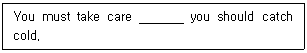
- because
- lest
- but
- that
(정답률: 56%)
52. 다음 중 관제 실무에 관한 영어 표현을 잘못된 것은?
- 여기는 ABC관제소 즉시 응답하시오. - This is ABC Control, Acknowledge.
- 즉시 비행경로를 좌/우로 변경하시오. - Immediately, Turn left/right
- 속도를 150노트로 줄이시오. - Reduce speed to 150knots.
- 비행 중 매 5분마다 위치보고를 하시오. - Repeat your position every 5 minutes.
(정답률: 49%)
53. 다음 문장은 어떤 용어에 대한 설명인가?
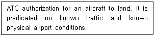
- Cleared For Take-off
- Circle to Runway
- Cleared To Land
- Cleared To Taxi
(정답률: 75%)
54. 다음문장의 해석으로 옳은 것은?
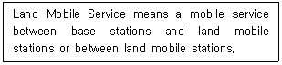
- 육상이동업무란 기지국과 육상국간, 또는 육상국간의 이동업무이다.
- 육상이동업무란 기지국과 이동국간, 또는 이동국간의 이동업무이다.
- 육상이동업무란 기지국과 육상국간, 또는 이동국간의 이동업무이다.
- 육상이동업무란 기지국과 육상이동국간, 또는 육상이동국간의 이동업무이다.
(정답률: 67%)
55. 다음 문장은 어떤 용어에 대한 설명인가?
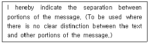
- Stand by
- Monitor
- Cancel
- Break
(정답률: 73%)
56. 다음의 문장이 나타내는 무선국은?
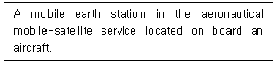
- Aircraft station
- Aircraft earth station
- Aeronautical station
- Aeronautical mobile station
(정답률: 48%)
57. 다음 중 “ROGER"의 의미에 대한 설명으로 맞는 것은?
- I've received all your transmission.
- Can be used to answer a question requiring yes or no?
- Ready to take off.
- Ready to touchdown.
(정답률: 77%)
58. 다음 문장의 밑줄 친 곳에 알맞은 것은?
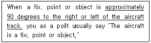
- abeam
- left or right
- side by side
- over
(정답률: 59%)
59. 항공무선 교신에서 나의 송신에 대한 상대국의 수신 상태를 알려고 질문하는 용어는?
- Advise me your receiving level.
- Report your receiving condition.
- What is your listening status?
- How do you read me?
(정답률: 78%)
60. 다음 문장의 괄호 안에 들어갈 가장 적합한 것은?
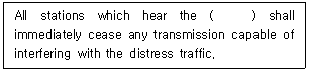
- service call
- emergency call
- distress call
- stations call
(정답률: 74%)
61. 다음 문장의 밑줄 친 부분의 의미로 가장 적합한 것은?
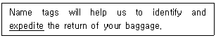
- speed up
- delay
- charge
- carry out
(정답률: 66%)
62. 다음 문장의 밑줄 친 부분에 들어갈 가장 적절한 단어는?
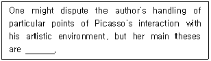
- incongruous
- untenable
- undecipherable
- irreproachable
(정답률: 44%)
63. 다음의 문장에 밑줄 친 부분에 들어갈 알맞은 것은?
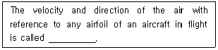
- Scalar
- Vector
- Stream Air
- Relative wind
(정답률: 59%)
64. 다음 문장의 밑줄 친 부분에 들어갈 알맞은 것은?(오류 신고가 접수된 문제입니다. 반드시 정답과 해설을 확인하시기 바랍니다.)
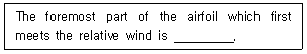
- Upper Camber
- Lower Camber
- Leading Edge
- Trailing Edge
(정답률: 40%)
65. 다음의 문장과 끝이 같은 것은?
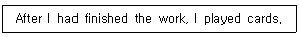
- Finished the work, I played cards.
- Had finishing the work, I played cards.?
- Having finished the work, I played cards.
- Having had finished the work, I played cards.
(정답률: 52%)
66. 다음 문장을 나타내는 용어는?
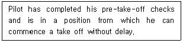
- LINE UP
- READY
- CLEARED TO LAND
- STAND BY
(정답률: 54%)
67. 다음 문장의 괄호 안에 들어갈 가장 적합한 것은?
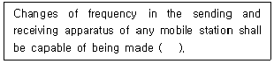
- as well as possible
- as far as possible
- as long as possible
- as rapidly as possible
(정답률: 67%)
68. 다음 문장의 괄호 안에 들어갈 가장 적합한 것은?
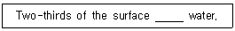
- are
- were
- are the
- is
(정답률: 64%)
69. 다음 문장의 괄호 안에 들어갈 알맞은 것은?
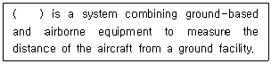
- VOR
- ILS
- DME
- TACAN
(정답률: 59%)
70. 다음 중 “전화를 잘못 거셨습니다.”라고 말할 때, 괄호 안에 들어갈 알맞은 것은?
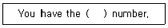
- wrong
- false
- bad
- another
(정답률: 80%)